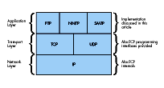
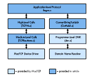
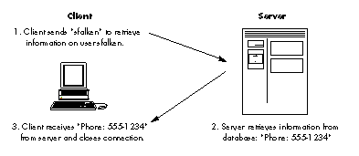
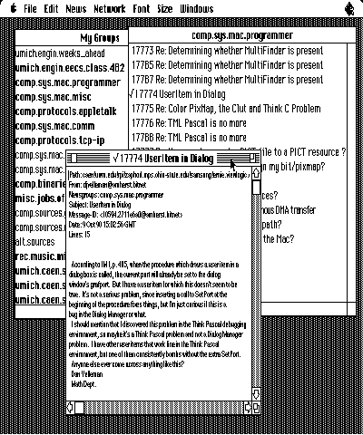
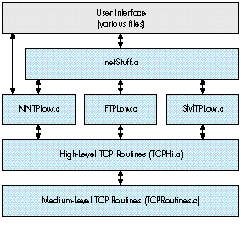

The Macintosh is now a full-fledged player in the world of TCP/IP networking.
MacTCP, an implementation of TCP/IP for the Macintosh, lets applications take
advantage of a protocol suite that is used extensively by many makes of computers.
This article attempts to demystify the process of MacTCP programming and provides a
library of calls that can be used easily by anyone familiar with Macintosh
programming.
TCP/IP, which stands for Transmission Control Protocol/Internet Protocol, was
developed by the U.S. Department of Defense Advanced Research Products Agency
(DARPA) and used initially on the ARPANET, a national research network created by
DARPA in the late 1960s. Although the ARPANET no longer exists, the TCP/IP
protocols are used on many large-scale networks. Many of these networks are
interconnected and are known collectively as the Internet.
The TCP/IP protocol stack, shown in Figure 1, is composed of several layers. At the
lowest layer, the Internet Protocol (IP) handles transmitting packets of information
from one host to another. Above this network level, TCP/IP provides two transport
layer protocols: Transmission Control Protocol (TCP) and User Datagram Protocol
(UDP). TCP provides reliable connection-based service, while UDP is not connection
based. The MacTCP ® driver gives the programmer interfaces to TCP and UDP, but not
to the lower-level IP. This article deals only with TCP programming. For information
on MacTCP UDP programming, consult the MacTCP Programmer's Guide.
Several application-level protocols use TCP to provide user-level service. The
Simple Mail Transfer Protocol (SMTP) is used to send electronic mail, the Network
News Transfer Protocol (NNTP) is used to transfer and post news, the File Transfer
Protocol (FTP) is used to transfer files between machines, and the Finger protocol is
used to retrieve user information. MacTCP does not include programming interfaces or
implementations for any of these application-level protocols.
With connection-based protocols, such as TCP, a connection is defined as a
bidirectional open line of communication between two hosts. Data is guaranteed to be
received in the same order as it was sent, and in TCP, data reliability is ensured. To
open a connection between two computers, the initiating program sends an open
command containing the network address of the remote computer to MacTCP. If the
remote computer is listening for a connection, it acknowledges the connection, and data
can then be transferred on the connection stream. If the remote computer is not
listening for a connection, the open command fails. Once all transactions have been
completed, the connection may be closed by either computer.

Figure 1 TCP/IP Protocol Stack
Network addressing is essential to this process. Each device connected to a TCP/IP
network is assigned a unique 4-byte address, also known as the IP number, as shown
in Table 1. A unique name can also be assigned to each network entity. MacTCP provides
a name service mechanism, called the Domain Name Resolver (DNR), which translates
network names to addresses and vice versa. In addition, there's a 2-byte port number
associated with TCP connections. Each port number is usually mapped to the type of
application-level service the sender is requesting. For example, the NNTP protocol
always operates on TCP port 119. This mapping is shown in Table 2. MacTCP does not
provide a service for translating between service name and port number.
Table 1 Network Name to Address Mapping
| Network Name | IP Number |
| sol.engin.umich.edu | 141.212.4.65 |
| mondo.engin.umich.edu | 141.212.68.14 |
| freebie.engin.umich.edu | 141.212.68.23 |
| daneel.engin.umich.edu | 141.212.68.30 |
| maize.engin.umich.edu | 141.212.10.56 |
Table 2 Service to Port Number Mapping
| Service | |
| ftp | 21 |
| telnet | 23 |
| smtp | 25 |
| finger | 79 |
| nntp | 119 |
This section focuses on the basics of MacTCP programming, while the remainder of the
article discusses high-level, easy-to-use routines. MacTCP is a driver for the
Macintosh that provides access to TCP/IP through the Device Manager. By making
standard Device Manager PBControl calls, programs can access TCP/IP transport
protocols to control and maintain connections. The standard TCP parameter block,
defined in TCPPB.h, is shown here:
typedef struct TCPiopb {
char fill12[12];
TCPIOCompletionProc ioCompletion;
/* address of completion routine */
short ioResult; /* result of call (>0 = incomplete) */
char *ioNamePtr;
short ioVRefNum;
short ioCRefNum; /* MacTCP driver reference number */
short csCode; /* command code */
StreamPtr tcpStream; /* pointer to stream buffer */
union {
struct TCPCreatePB create; /* var for TCPCreate,TCPRelease */
struct TCPOpenPB open;
/* var for TCPActiveOpen,TCPPassiveOpen */
struct TCPSendPB send; /* var for TCPSend */
struct TCPReceivePB receive;
/* var for TCPNoCopyRcv,TCPRcvBfrReturn,TCPRcv */
struct TCPClosePB close; /* var for TCPClose */
struct TCPAbortPB abort; /* var for TCPAbort */
struct TCPStatusPB status; /* var for TCPStatus */
struct TCPGlobalInfoPB globalInfo;
/* var for TCPGlobalInfo */
} csParam;
} TCPiopb;
From the start of the parameter block up to the tcpStream parameter, this structure
is a standard Device Manager control block. Three fields must be filled in:
If the call is made asynchronously, as all MacTCP calls may be, a pointer to a
completion routine can be specified in ioCompletion. Depending on the type of call
made, there are various ways to fill in the union at the end of this parameter block.
TCP DRIVER CALLS
A description of some of the common commands and their parameter blocks follows.
Unless otherwise specified, a value of zero for any parameter indicates the default
value.
TCPCreate (csCode = 30)
TCPRelease (csCode = 42)
typedef struct TCPCreatePB {
Ptr rcvBuff; /* pointer to area allocated
for stream buffer */
unsigned long rcvBuffLen; /* length of stream buffer */
TCPNotifyProc notifyProc; /* address of asynchronous
notification routine */
Ptr userDataPtr;
}TCPCreatePB;
TCPCreate allocates a MacTCP stream to be used for opening or listening for a
connection. The rcvBuff parameter should be a pointer to a block of memory
previously allocated as a stream buffer; set rcvBuffLen to the length of that buffer. If
you want to be interrupted when the connection state changes, set notifyProc to the
address of an asynchronous notification routine (ASR). The code in this article doesn't
make use of the ASR feature, so in this case notifyProc should be set to nil. A pointer to
the created stream is returned in tcpStream.
TCPRelease removes the stream pointed to by tcpStream from all MacTCP-internal
stream lists. It returns a pointer to the stream buffer in rcvBuff. When TCPRelease
completes successfully, this buffer should be disposed of by the calling program.
TCPPassiveOpen (csCode = 31)
TCPActiveOpen (csCode = 32)
typedef struct TCPOpenPB {
byte ulpTimeoutValue; /* upper-layer protocol
timeout */
byte ulpTimeoutAction; /* upper-layer protocol
timeout action */
byte validityFlags; /* validity flags for options */
byte commandTimeoutValue; /* timeout value for command */
ip_addr remoteHost; /* IP address of the remote
host */
tcp_port remotePort; /* TCP port to connect to on the
remote host */
ip_addr localHost; /* local IP number */
tcp_port localPort; /* local port from which
connection originates */
byte tosFlags; /* type of service requested */
byte precedence; /* priority of connection */
Boolean dontFrag; /* if true, don't fragment
packets */
byte timeToLive; /* maximum number of hops for
packets */
byte security; /* security option byte */
byte optionCnt; /* number of IP options */
byte options[40]; /* other IP options (def in
RFC 894) */
Ptr userDataPtr;
}TCPOpenPB;
TCPPassiveOpen listens for an incoming connection from a specific host and port. The
command completes when a remote host connects to the port monitored by this
command. Store the remote host address in remoteHost and specify the remote TCP port
number in remotePort. Connections from any host and port are possible if these values
are set to zero. Set the localPort parameter to the local TCP port number or to zero to
assign an unused port. ULP ("ulp" in the parameter names) stands for upper-layer
protocol. The ulpTimeoutValue parameter is the maximum amount of time MacTCP
allows for a connection to complete after the connection process has started. If this
timeout is reached, and the value of ulpTimeoutAction is zero, the ASR, if present, is
called and the ULP timer is reset. When the timeout is reached, if ulpTimeoutAction is
nonzero, the command returns an error. The validityFlags parameter indicates which
of the other command parameters are specified explicitly. Bit 6 is set if the ULP
timeout action is valid; bit 7 is set if the ULP timeout value is valid. Descriptions for
the rest of the entries in this structure can be found in the MacTCP Programmer's
Guide. In most cases, they can all be set to zero, indicating default values should be
used.
TCPActiveOpen attempts to initiate a connection with a remote host and completes when
this connection is established. The parameters are identical to TCPPassiveOpen, with
the following exceptions: There's no command timeout parameter, although the ULP
timeout is available. You must fully specify the remote host address and remote port in
remoteHost and remotePort, respectively, since it's impossible to initiate a connection
to an arbitrary host without direction.
TCPSend (csCode = 34)
typedef struct TCPSendPB {
byte ulpTimeoutValue; /* upper-layer protocol
timeout */
byte ulpTimeoutAction; /* upper-layer protocol
timeout action */
byte validityFlags; /* validity flags for
options */
Boolean pushFlag; /* true if data should be sent
immediately */
Boolean urgentFlag; /* identifies the data as
important */
Ptr wdsPtr; /* pointer to write data
structure */
unsigned long sendFree;
unsigned short sendLength;
Ptr userDataPtr;
}TCPSendPB;
TCPSend sends data to a remote host along an open connection stream. The definitions of
ulpTimeoutValue, ulpTimeoutAction, and validityFlags are the same as in
TCPPassiveOpen. The pushFlag parameter is set if the data should be sent immediately
and the urgentFlag option can be set to indicate that the data is important. The data to be
sent is stored in a write data structure (WDS). The format of this structure is simply
an array of wdsEntry structures, which are length/pointer pairs. You terminate the
WDS by setting the last entry's length to zero.
typedef struct wdsEntry {
unsigned short length; /* length of buffer */
char * ptr; /* pointer to buffer */
} wdsEntry;
TCPRcv (csCode = 37)
typedef struct TCPReceivePB { /* for receive and return rcv buff
calls */
byte commandTimeoutValue; /* timeout value for
command */
byte filler;
Boolean markFlag; /* true if start of read data
structure is urgent data */
Boolean urgentFlag; /* true if read data structure
ends in urgent data */
Ptr rcvBuff; /* pointer to data that has been
received */
unsigned short rcvBuffLen; /* amount of data in bytes that has
been received */
Ptr rdsPtr; /* pointer to read data structure */
unsigned short rdsLength;
unsigned short secondTimeStamp;
Ptr userDataPtr;
}TCPReceivePB;
TCPRcv receives incoming data on an already established connection. Allocate a buffer
for the incoming data and store a pointer to this location in rcvBuff. Store the
maximum length to be received in rcvBuffLen. This value is changed to the number of
bytes received when the command completes. Store the timeout value for this
command in commandTimeoutValue. Finally, use markFlag and urgentFlag to delimit
the start and end of urgent data blocks.
TCPClose (csCode = 38)
typedef struct TCPClosePB {
byte ulpTimeoutValue; /* upper-layer protocol timeout */
byte ulpTimeoutAction; /* upper-layer protocol timeout action */
byte validityFlags; /* validity flags for options */
Ptr userDataPtr;
}TCPClosePB;
TCPClose indicates to the remote host that the caller has no more data to send on the
connection. It's assumed that the remote host will then issue a close command, which
permits the connection to close. However, the connection will not close until both
hosts issue this command. The parameters to this call are described in other calls.
TCPAbort (csCode = 39)
typedef struct TCPAbortPB {
Ptr userDataPtr;
}TCPAbortPB;
TCPAbort closes a connection without asking the remote host for permission. This
command does not ensure that all data transfers have completed. The parameters to this
call are described earlier.
MEDIUM-LEVEL TCP CALLS
Since calling the Device Manager is a painful experience for some programmers, a
small library of intermediate routines can speed up development time. This article
includes such a library. There's one medium-level call provided for each associated
TCP driver command, so these calls simply isolate programmers from filling out
parameter blocks. This seems to be a big plus with most programmers. The source code
for the calls is on the Developer Essentials disc.
Several of the medium-level calls have hooks that allow them to be called
asynchronously. Any procedure containing an async flag can be called in this manner.
If this is done, the parameter block used to make the call is returned in returnBlock.
The calling program must then poll returnBlock- >ioResult to determine when the
command has completed. As with any other Device Manager call, the ioResult field
remains positive while the command is executed and then changes to zero or a negative
value upon completion, indicating the call's result code. Any number of calls may be
awaiting completion, since medium-level routines dynamically allocate space for
parameter blocks. Completion routine hooks are not provided by these routines, but
could easily be added.
If a medium-level routine is called with the async flag false, or if the routine doesn't
have an async flag, the underlying PBControl call is still called asynchronously. While
awaiting completion of the command, the medium-level routines call a routine defined
by
Boolean GiveTime(unsigned long sleepTime);
This callback permits the application to carry out other small tasks. In the examples
in this article, GiveTime spins the cursor and calls WaitNextEvent from a secondary
main event loop to handle a subset of normal program operation and to give other
applications time to execute.
At this point, you may be thinking that figuring out proper values for these routines is
as much of a pain as filling out parameter blocks. For this reason, another set of
high-level routines is provided for sending and receiving data.
HIGH-LEVEL TCP CALLS
High-level TCP calls further simplify and generalize the process of calling MacTCP.
Write data structures are not required to send data, only a single timeout value is
allowed, and other TCP specifics (mark, push, and so on) have been removed. Instead,
the high-level calls are a core set of routines that are both understandable and easy to
use. In most cases, it's to your advantage to use these routines, since they abstract the
MacTCP programming interface to resemble a generic connection-based protocol
scheme. This opens the possibility of porting these high-level routines to another
protocol stack, such as AppleTalk ®. In fact, if the high-level routines were modified
to use AppleTalk Datastream Session Protocol (ADSP), any code written using the
high-level calls for MacTCP could be compiled for use on an AppleTalk network. The
source code for these routines is on the Developer Essentials disc.
The operation of high-level MacTCP calls is fairly straightforward. For each
asynchronous routine, there's a corresponding routine to call when the asynchronous
command completes. The moment of completion can be determined by polling
returnBlock->ioResult. This returnBlock parameter is the same as the one returned
by the medium-level routines and contains the MacTCP parameter block used in the
pending asynchronous call.
NAME RESOLVER CALLS
Before you can build a useful network application, you must consider name-to-address
resolution. Name-to-address resolution provides a means of converting from domain
names (unique string identifiers for computers on a TCP/IP network) to IP numbers
(4-byte addresses) and vice versa. In general, people can remember the name of a
computer (for example, goofy.apple.com) more easily than they can remember a
network address (for example, 90.1.0.10). Translation tables between the names and
numbers can be stored on the local machine (the MacTCP Hosts file, for example) or
on a remote server. Remote access to network numbers is provided through the Domain
Name Server protocol. The MacTCP Domain Name Resolver allows name/address
translations using both the static table and remote server methods.
The MacTCP Developer's Kit (APDA #M0230LL/D) ships with the file dnr.c, a set of C
routines providing a programming interface to the name resolver. Several important
calls from this code module are described here.
OSErr OpenResolver(char *fileName);
OpenResolver initializes the name resolver. As a parameter to the call, you can supply
a local file containing important hosts. Passing nil for this filename defaults to the
Hosts file in the current System Folder.
OSErr StrToAddr(char *hostName, struct hostInfo *hostInfoPtr,
ResultProcPtr ResultProc, char *userDataPtr);
StrToAddr converts a string of the form "W.X.Y.Z" or "goofy.apple.com" to its 4-byte
IP address. The hostInfo struct that you pass in looks like this:
typedef struct hostInfo {
long rtnCode;
char cname [255];
unsigned long addr [NUM_ALT_ADDRS];
};
OSErr AddrToName(ip_addr addr, struct hostInfo *hostInfoPtr,
ResultProcPtr ResultProc, char *userDataPtr);
AddrToName performs a reverse lookup to retrieve a host name, given a 4-byte IP
address.
OSErr CloseResolver();
CloseResolver closes the resolver and deallocates the resources and the address cache
that has accumulated.
Calls to these dnr.c routines can be combined to construct a fairly simple routine to
convert host names to IP addresses:
/* CvtAddr.c
Converts host names to IP numbers
written by Steve Falkenburg
*/
#include <Types.h>
#include <MacTCPCommonTypes.h>
#include <AddressXLation.h>
#include "CvtAddr.h"
pascal void DNRResultProc(struct hostInfo *hInfoPtr,char
*userDataPtr);
/* ConvertStringToAddr is a simple call to get a host's IP number,
given the name
of the host.
*/
OSErr ConvertStringToAddr(char *name,unsigned long *netNum)
{
struct hostInfo hInfo;
OSErr result;
char done = 0x00;
if ((result = OpenResolver(nil)) == noErr) {
result = StrToAddr(name,&hInfo,DNRResultProc,&done);
if (result == cacheFault)
while (!done)
; /* wait for cache fault resolver to be called by
interrupt */
CloseResolver();
if ((hInfo.rtnCode == noErr) ||
(hInfo.rtnCode == cacheFault)) {
*netNum = hInfo.addr[0];
strcpy(name,hInfo.cname);
name[strlen(name)-1] = '\0';
return noErr;
}
}
*netNum = 0;
return result;
}
/* This is the completion routine used for name resolver calls.
It sets the userDataPtr flag to indicate the call has completed.
*/
pascal void DNRResultProc(struct hostInfo *hInfoPtr,
char *userDataPtr)
{
#pragma unused (hInfoPtr)
*userDataPtr = 0xff; /* Setting the user data to nonzero means
we're done. */
}
The core set of routines provided in the earlier sections makes it fairly easy to write a
small but useful TCP application. These core routines can be stacked together to form a
framework for a basic MacTCP application, as shown in Figure 2. Note that no module
accesses a module that's farther than one level away. This provides the programmer
the flexibility needed to improve the networking library or switch protocol stacks
without losing functionality.

Figure 2 Finger Code Modularization
One of the simplest and most widely used network utilities is finger. Implemented on
most UNIX workstations, finger is used to retrieve personal information (such as
phone number and address) for a particular user. The finger utility accesses
information through the Finger User Information Protocol, discussed in RFC 1194 on
the Developer Essentials disc. The protocol operates on a client/server model. Figure
3 is a diagram of a sample transaction.
Client Server1. Client sends "sfalken" to retrieve information on user sfalken.

Figure 3Finger Protocol Transaction
The code for a simple MPW tool to implement the Finger protocol is shown here, with
accompanying explanation:
/* MacTCP finger client */
/* written by Steven Falkenburg */
/* */
#include <Types.h>
#include <Memory.h>
#include <Packages.h>
#include <CursorCtl.h>
#include <String.h>
#include "CvtAddr.h"
#include "MacTCPCommonTypes.h"
#include "TCPPB.h"
#include "TCPHi.h"
/* constants */
#define kFingerPort 79 /* TCP port assigned for finger protocol */
#define kBufSize 16384 /* Size in bytes for TCP stream buffer and
receive buffer */
#define kTimeOut 20 /* Timeout for TCP commands (20 sec. pretty
much arbitrary) */
/* function prototypes */
void main(int argc,char *argv[]);
OSErr Finger(char *userid,char *hostName,Handle *fingerData);
OSErr GetFingerData(unsigned long stream,Handle *fingerData);
void FixCRLF(char *data);
Boolean GiveTime(short sleepTime);
/* globals */
Boolean gCancel = false; /* This is set to true if the user
cancels an operation. */
/* main entry point for finger */
/* */
/* usage: finger <user>@<host> */
/* */
/* This function parses the args from the command line, */
/* calls Finger() to get info, and prints the returned info. */
void main(int argc,char *argv[])
{
OSErr err;
Handle theFinger;
char userid[256],host[256];
if (argc != 2) {
printf("Wrong number of parameters to finger call\n");
return;
}
sscanf(argv[1],"%[^@]@%s",userid,host);
strcat(userid,"\n\r");
err = Finger(userid,host,&theFinger);
if (err == noErr) {
HLock(theFinger);
FixCRLF(*theFinger);
printf("\n%s\n",*theFinger);
DisposHandle(theFinger);
}
else
printf("An error has occurred: %hd\n",err);
}
/* Finger() */
/* This function converts the host string to an IP number, */
/* opens a connection to the remote host on TCP port 79, sends */
/* the id to the remote host, and waits for the information on */
/* the receiving stream. After this information is sent, the */
/* connection is closed down. */
OSErr Finger(char *userid,char *hostName,Handle *fingerData)
{
OSErr err;
unsigned long ipAddress;
unsigned long stream;
/* open the network driver */
err = InitNetwork();
if (err != noErr)
return err;
/* get remote machine's network number */
err = ConvertStringToAddr(hostName,&ipAddress);
if (err != noErr)
return err;
/* open a TCP stream */
err = CreateStream(&stream,kBufSize);
if (err != noErr)
return err;
err = OpenConnection(stream,ipAddress,kFingerPort,kTimeOut);
if (err == noErr) {
err = SendData(stream,userid,
(unsigned short)strlen(userid),false);
if (err == noErr)
err = GetFingerData(stream,fingerData);
CloseConnection(stream);
}
ReleaseStream(stream);
return err;
}
OSErr GetFingerData(unsigned long stream,Handle *fingerData)
{
OSErr err;
long bufOffset = 0;
unsigned short dataLength;
Ptr data;
*fingerData = NewHandle(kBufSize);
err = MemError();
if (err != noErr)
return err;
HLock(*fingerData);
data = **fingerData;
dataLength = kBufSize;
do {
err = RecvData(stream,data,&dataLength,false);
if (err == noErr) {
bufOffset += dataLength;
dataLength = kBufSize;
HUnlock(*fingerData);
SetHandleSize(*fingerData,bufOffset+kBufSize);
err = MemError();
HLock(*fingerData);
data = **fingerData + bufOffset;
}
} while (err == noErr);
data[0] = '\0';
HUnlock(*fingerData);
if (err == connectionClosing)
err = noErr;
}
/* FixCRLF() removes the linefeeds from a text buffer. This is */
/* necessary, since all text on the network is embedded with */
/* carriage return linefeed pairs. */
void FixCRLF(char *data)
{
register char *source,*dest;
long length;
length = strlen(data);
if (*data) {
source = dest = data;
while ((source - data) < (length-1)) {
if (*source == '\r')
source++;
*dest++ = *source++;
}
if (*source != '\r' && (source - data) < length)
*dest++ = *source++;
length = dest - data;
}
*dest = '\0';
}
/* This routine would normally be a callback for giving time to */
/* background apps. */
Boolean GiveTime(short sleepTime)
{
SpinCursor(1);
return true;
}
The main points in the execution of this program can be traced as follows:
InitNetwork(); ConvertStringToAddr(hostName,&ipAddress);CreateStream(&stream,kBufSize);OpenConnection(stream,ipAddress,kFingerPort,kTimeOut); SendData(stream,userid,(unsignedshort)strlen(userid),false);RecvData(stream,data,&dataLength,false); from stream CloseConnection(stream); ReleaseStream(stream);
Once the host name and user ID are received, MacTCP is initialized by a call to
InitNetwork. The IP number of the host is then retrieved by a call to
ConvertStringToAddr. If this is successful, CreateStream creates a TCP stream, and
OpenConnection opens a connection on that stream to the finger port on the remote host.
Next, SendData sends the user ID along this connection. The fingerinformation is
received through repeated calls to RecvData. Once all data has been sent,
CloseConnection closes the connection, and the stream is removed with
ReleaseStream. Finally, the program terminates, leaving the MacTCP driver open.
Here's a sample run of the finger tool in action:
finger sfalken mondo.engin.umich.edu <enter>
Login name: sfalken In real life: Steven Falkenburg Phone: 555-1234 Directory: /u/sfalken Shell: /bin/csh On since Feb 26 07:08:28 on ttyp2 from rezcop.engin.umi No Plan.
The code for the finger tool can be compiled and linked with the high- and
medium-level routines into an MPW tool. This example shows how a standard network
protocol can be easily encapsulated into a simple program. The high-level networking
calls act somewhat like a Macintosh Toolbox Manager, since they encapsulate the
complexity of TCP programming. These routines can be used by any programmer with
a user-level knowledge of networking, making network programming less of a
mysterious art.
The finger tool is limited in scope, but the same techniques can be used to construct
more complex programs. NewsWatcher, a Macintosh-based network news reader,
provides an example.
One of the most popular services available on the Internet is network news, an
international forum for discussion of almost any topic you can imagine. Anyone can
post and read messages. Since thousands of messages are posted every day, the messages
are divided into more than a thousand newsgroups. Examples of these diverse groups
include
| comp.sys.mac.programmer | Macintosh programming |
| discussions | |
| comp.sys.mac.misc | Miscellaneous Macintosh |
| ramblings | |
| alt.flame.spelling | People insulting others' |
| spelling skills | |
| alt.alien.visitors | Discussions of alien |
| life--intelligent or otherwise |
The volume of network news bombarding readers necessitates a usable interface. I
wrote NewsWatcher to provide that interface.
NAVIGATING THE NET WITH NEWSWATCHER
Before plunging into a deep technical discussion of the NewsWatcher code structure, a
brief description of the interface is in order. A typical NewsWatcher screen is shown
in Figure 4.
The program is based on a multiwindow browser interface, similar to the Finder
(without the icons). A window containing all active newsgroups is always available,
and users can get a full article subject list for a group by double-clicking that group's
name. This opens up another browsing window, containing the subjects. These
subjects, in turn, can be opened to display the full text of individual articles in
separate windows. A user who wants to keep track of a few specific newsgroups and see
only new articles in those groups can "subscribe" to the specific groups. This is done
by choosing New Group Window from the File menu, which creates an empty group
window. The desired groups can then be dragged from the main Newsgroups window to
this custom group window. The new window can be browsed like any other group
window. When the user is ready to quit, the custom group list can either be saved to
disk or uploaded to a UNIX ® news file (using FTP). This gives users access to their
group list from multiple computers.

Figure 4 A Typical NewsWatcher Screen
Not surprisingly, the user interface code for NewsWatcher, though complex, has
virtually nothing to do with MacTCP programming and is beyond the scope of this
article. This code, however, is included on the Developer Essentials disc for those
interested in a multiwindow browsing system.
NEWSWATCHER NNTP ROUTINES
The Network News Transfer Protocol (NNTP) is easily implemented from the
medium-level TCP calls described in the first part of this article. (For information on
NNTP, see "Introduction to NNTP.") The NNTP calls in NewsWatcher are encapsulated
into a module named NNTPLow.c. The external functions in this module, along with a
description of their purpose, are described here:
OSErr StartNNTP(void);
StartNNTP initializes the network resources needed to establish an NNTP connection
with a remote server. Once all proper drivers have been initialized, this routine opens
a connection to the local NNTP server, whose name is stored in the program's
configuration file. This connection is maintained throughout the life span of the
program.
OSErr CloseNewsConnection(void);
CloseNewsConnection gracefully terminates a connection with a remote NNTP server.
This command is executed only when NewsWatcher is quitting.
OSErr ResetConnection(void);
ResetConnection is called when a communication error occurs between the client and
server. This routine terminates and attempts to reestablish connection to the NNTP
server.
OSErr GetGroupList(short *numGroups);
GetGroupList puts the list of newsgroups in the global variable gGroupList. To get the
list of groups from the server, the command LIST is sent to the server, which
responds with a list of allknown newsgroups.
OSErr GetMessages(char *newsGroup,long first,long last, TSubject *subjects,long *numSubjects,char *hdrName);
GetMessages returns a set of subject headers specified by group name and article
number range. This routine operates by sending the command XHDR groupname
first-last to the NNTP server and parsing the response.
OSErr GetArticle(char *newsGroup,char *article,char **text,
long *length, long maxLength);
GetArticle retrieves the full text of the article in group newsGroup named article .
This procedure sends the command ARTICLE article to the NNTP server.
These procedures are called in response to user requests for articles and subject lists.
As you can see, there's absolutely no network dependence at this point, even on the
NNTP protocol. It would be trivial to write a set of routines with identical function
prototypes that treated a file hierarchy on a hard disk as a set of newsgroups and
articles. This layered isolation approach is of critical importance in network
programming, since network-level protocols may change while applications remain
the same.
OTHER PROTOCOLS IN NEWSWATCHER
In addition to NNTP, several other network protocols are implemented for
NewsWatcher. These protocols include the Simple Mail Transfer Protocol (SMTP) and
the File Transfer Protocol (FTP).
Simple Mail Transfer Protocol (SMTP). SMTP gives users the ability to
respond to article postings through electronic mail. This protocol, like NNTP, operates
on a request-response stream. SMTP servers listen on TCP port 25, and the protocol
is described in detail in RFC 821 on the Developer Essentials disc. NewsWatcher
contains a single procedure, SendSMTP, that takes care of setting up a connection to the
server, sending the message, and disconnecting. The function prototype for this
function is as follows:
Boolean SendSMTP(char *text,unsigned short tLength);
The SendSMTP code is contained within the SMTPLow.c code module. This separation
allows the code to be used in other programs easily. The routine calls functions in
TCPLow.c (the medium- level routines) and is called from netstuff.c.
File Transfer Protocol (FTP). NewsWatcher includes FTP-based routines that
allow users to send lists of newsgroups to, and receive them from, a file on a remote
machine. This protocol uses a control stream, running on TCP port 21, to set up file
transfers. When a transfer is initiated, a secondary data stream is opened on a
negotiated TCP port. The file transfer is completed by means of this secondary stream,
and the data stream is then closed down. For a detailed description of the protocol and
command set used, see RFC 959 on the Developer Essentials disc. To shield
programmers from the complications of FTP, I wrote several high-level routines to
implement it:
OSErr FTPInit(ProcPtr statusCallback);
FTPInit initializes network resources required for FTP transfers. The single
parameter provided is a pointer to a callback procedure called when a status message
is received from a remote host.
OSErr FTPFinish(void);
Call this routine when file transfers are finished to release network resources used to
support the FTP session.
OSErr FTPConnect(unsigned long *connID,char *address,char *userID, char *password);
Call FTPConnect with the address of the remote machine, along with the user ID and
password of the account needed to access that machine.
OSErr FTPDisconnect(unsigned long connID);
After all transfers to a particular host have been completed, call this routine to
disconnect from the remote host.
OSErr FTPViewFile(unsigned long connID,Ptr *file,char *fileName);
FTPViewFile retrieves a file from the remote machine and stores its data in a pointer
allocated within the function.
OSErr FTPPutFile(unsigned long connID,char *fileName,char *data,
long size);
FTPPutFile is used to send a file to a remote machine. The remote filename and the file
data and length must be given.
These routines are contained in FTPLow.c, using the same modular layered approach as
for other protocols.
NEWSWATCHER CODE MODULARITY
As in the finger example, the NewsWatcher source code is structured for maximum
flexibility in case of a protocol switch and to allow for ease in code sharing. The logical
code blocks are shown in Figure 5. The FTPLow.c module, for example, could easily be
extended and used as a generic file transfer module in many applications. It simply
requires the medium- and high-level TCP calls described earlier.

Figure 5NewsWatcher Code Modularization
Although programming with MacTCP can be fairly complicated from a low-level point
of view, using high-level routines makes it much simpler to create an easy-to-use
TCP networking module. Once difficult issues, such as asynchronous behavior, are
handled at a low level, higher-level modules can successively add protocol support for
mail, news, and file transfer. These high-level routines can be used by any
programmer, regardless of network-level knowledge.
The Network News Transfer Protocol (NNTP) is a popular protocol for transmitting
and accessing network news on the Internet. This protocol, which runs out of TCP port
119 on a news host computer, is described in detail in RFC 977 on the Developer
Essentials disc. NNTP, like finger, is based on the client-server model. An NNTP
server, usually one per site, stores a copy of each newsgroup and new article. Clients
contact this server to request news or post new articles.
The protocol is based on a request-response model. Clients contact the NNTP server,
make a request, and receive a response. A sample session with an NNTP server is
shown below. Commands sent from the client (in this case a Macintosh) are shown in
italics.
200 srvr1.engin.umich.edu NNTP server version 1.5.10 + serve.c GNUS
patch (3 October 1990) ready at Tue Oct 9 23:46:12 1990 (posting ok).
HELP
100 This server accepts the following commands:
ARTICLE BODY GROUP
HEAD LAST LIST
NEXT POST QUIT
STAT NEWGROUPS HELP
IHAVE NEWNEWS SLAVE
Additionally, the following extension is supported:
XHDR Retrieve a single header line from a range of articles.
Bugs to Stan Barber (Internet: nntp@tmc.edu; UUCP: ...!bcm!nntp)
.
GROUP comp.sys.mac.misc
211 281 3035 3744 comp.sys.mac.misc
ARTICLE 3035
220 3035 <1990Sep14.145124.25214@midway.uchicago.edu>
Article retrieved; head and body follow.
...article text here...
.
QUIT
205 srvr1.engin.umich.edu closing connection. Goodbye.
For information on the TCP/IP protocol stack and networking in
general:
For an in-depth discussion of some of the protocols:
These RFCs are on the Developer Essentials disc. The library of RFC (Request For
Comment) memos is available by anonymous FTP from NIS.NSF.NET in the directory
RFC. Use FTP to connect to this host and useanonymous for username and guest for
password.
A useful on-line reference for TCP/IP:
This on-line reference is on the Developer Essentials disc.
STEVE FALKENBURG just started his new life as an Apple Developer Technical
Support engineer, but when writing this he was still a computer engineering student
at the University of Michigan at Ann Arbor. Last summer he worked in Apple's
Advanced Technology Group as an intern, and he claims to have emerged from the
experience totally normal (a summer in ATG may not be long enough, but a full-time
job in DTS is another story altogether). He says there is absolutely nothing weird
about him (which he thinks is a shame), but we're convinced we'll either unearth
something or inspire it. In addition to attending classes, he's been working for the
university's Computer-Aided Engineering Network, supporting and programming
Macintoshes. When not working or studying, he's been seen in the stands at U of M
football games (so don't misinterpret him when he yells "Go Big Blue"), attending loud
rock concerts, going to movies, and reading Cyberpunk (his favorite is William
Gibson). *
For a more complete reference to the TCP driver calls, please see the MacTCP
Programmer's Guide. *
For interested programmers, full source code to both the finger tool and
NewsWatcher are available on the Developer Essentials disc. *
Thanks to Our Technical Reviewers Pete (Luke) Alexander, Brian Bechtel,
Harry Chesley, Larry Rosenstein, Andy Shebanow, Gordon Sheridan, John Veizades. *